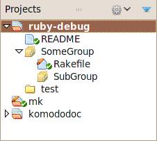

Projects
Komodo Projects are collections of settings and preferences that help you work with a particular set of files. These settings include:
- the base directory to display in Places
- links to additional directories
- links to files
- arbitrary groups of file and directory links
- previously open files (optionally re-opened when the project becomes active)
- debugger preferences
- test plans
- language library paths
- mapped URIs
Projects Pane
The Projects pane at the bottom of the Places pane is the main interface to projects. It lists all open projects, showing the active project in bold.
Double-clicking on a project in this list will make that project active and switch the Places pane above to the base directory of the project.
Open vs. Active Projects
Multiple projects can be opened in the Projects pane to give you quick access to that project's file and directory links, but only one project at a time can be active.
If the active project has saved debugger settings, test plans, library search paths, or mapped URI's, these settings will be active for all files that are part of that project.
Projects Menu
The Projects menu is available in the toolbar for the Projects pane and as a right-click context menu. The toolbar menu operates on the active (boldface) project and the context menu operates on the selected project.
- Show in Places: Changes the Places pane to the base directory of the project. The filesystem directory associated with the project can be overridden in the Properties.
- Close Project: Closing the current project (as opposed to switching projects) clears the project preferences, reverting to whatever preferences or defaults are set globally.
- Save Project: Saves the current project properties to the ".komodoproject" file.
- Save Project As...: Saves a copy of the current project with a different name (or in a different location) and switches to the new project.
- Rename Project...: Renames the current project in place.
- Open Project in New Window: Each Komodo window can have only one active project oat a time. This feature spawns a new Komodo window with the selected project as the active one, allowin you to work with multiple projects silmultaneously.
- Replace Project...: Switch to a different project.
- New Project: Opens the filesystem browser to select the location and name of a new project. The project preferences and settings are stored in a ".komodoproject" file. The directory selected becomes the base directory for display in Places.
- Properties: Opens the Properties and Settings dialog for the current or selected project.
Project Properties and Settings
Komodo has preferences at the file, project and global level. File preferences take precedence over project preferencs which take precedence over global preferences. When a project is active, it's settings override global preferences wherever there is overlap.
Project settings include the following sub-set of the global preferences:
- Debugging
- Test Plan Configuration
- Directory Import
- Languages
- Mapped URIs